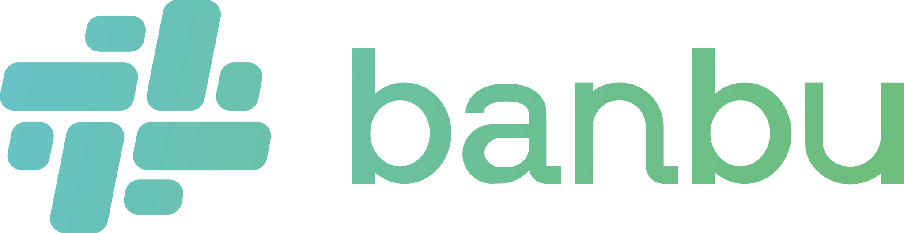

Selective narrative review
未命名稿件
先导入一篇稿件
系统只挑选能支撑主命题的 C/Q/S/R 候选句。

PR One Page系统只挑选能支撑主命题的 C/Q/S/R 候选句。
支持 Word（.docx）、TXT、MD 或直接粘贴。Word 中已有的红黄绿紫标注会还原为 C/Q/S/R。
先打开稿件库中的全文，再导入 Word（.docx）、TXT、MD 或粘贴 One Page。系统会把内容匹配回原文并生成 CQSR 标注。
保存在当前浏览器。打开后可继续查看全文、分类和 One Page。
由当前精选句自动生成，内容可继续修改或删除。